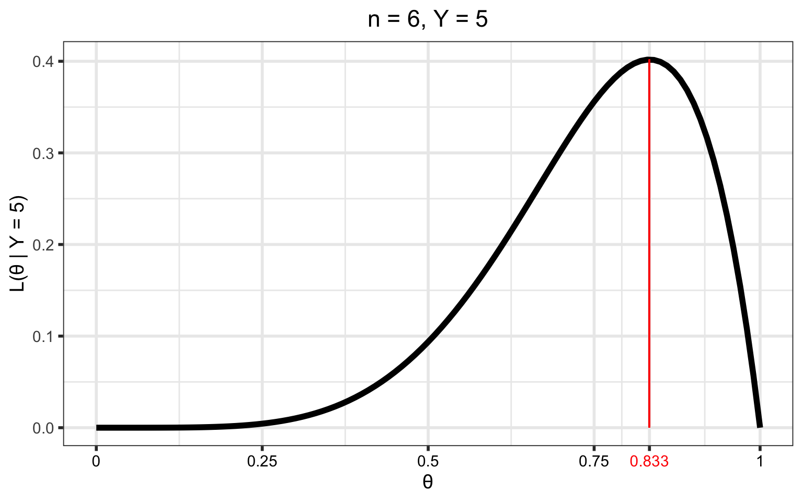
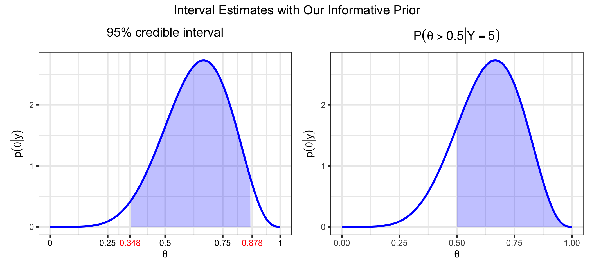

Code
library(plotly)
library(patchwork)
library(latex2exp)
library(cmdstanr)
library(tidyverse)Stay tuned for a major update and come to StanBio Connect on May 30, 2025!
This document is meant to introduce you to the most basic elements of Bayesian inference. It is in no way comprehensive, but it will hopefully give you a platform of understanding so that you can dive deeper if you want.
We want to estimate the proportion of the population that likes Mountain Dew Cheesecake:
After collecting \(n = 6\) data points where \(y = 5\) people liked it, we want to make inferences about the population parameter \(\theta\), the proportion of people in the population that likes Mt. Dew Cheesecake.
The most common methods for parameter estimation in non-Bayesian paradigms involve some sort of optimization. For this problem, we’ll use maximum likelihood1, where we find the value of \(\theta\) that maximizes the likelihood2, or, in other words, we find the value of \(\theta\) that maximizes the probability of observing the data that we have observed.
In our motivating example, we assume the data has a binomial distribution with \(n\) trials and probability of success, \(\theta\), i.e. \(Y \sim Bin(n,\theta)\). Then we can write out the density3, \(f(y \;| \; \theta)\), the probability that we would would observe \(y\) “successes” out of \(n\) trials for a given value of \(\theta\) for any value of \(y \in \{0, 1, 2, \ldots, n\}\) and \(0 \leq \theta \leq 1\):
\[ \begin{align} f(y | \theta) &= P(Y = y \;| \;\theta) \\ &= {n \choose y}\theta^y(1 - \theta)^{n-y}, \;\; y = 0, \; 1, \; 2, \;\ldots, \; n \end{align} \]
For our example above, for \(\theta\) values of 0.4 and 0.75, the density of \(Y\) looks like this:
n <- 6
probs <- c(0.40, 0.75)
binom_data <- expand_grid(y = 0:n, theta = probs) %>%
mutate(density = dbinom(y, n, prob = theta))
base_plot <- ggplot(mapping = aes(x = y, y = density,
text = paste0("y: ", y, "</br></br>density: ",
round(density, 3)))) +
scale_x_continuous(name = "y",
breaks = 0:n,
labels = 0:n) +
ggtitle("Binomial Density") +
ylim(c(0, 0.4)) +
theme(plot.title = element_text(hjust = 0.5))
p_1 <- (base_plot +
geom_bar(data = filter(binom_data, theta == probs[1]),
stat = "identity")) %>%
ggplotly(tooltip = "text") %>%
layout(yaxis = list(title = str_c("P(Y = y | \U03B8 = ", probs[1],")")),
xaxis = list(title = "y"))
p_2 <- (base_plot +
geom_bar(data = filter(binom_data, theta == probs[2]),
stat = "identity")) %>%
ggplotly(tooltip = "text") %>%
layout(yaxis = list(title = str_c("P(Y = y | \U03B8 = ", probs[2],")")),
xaxis = list(title = "y"))
annot_base <- list(y = 1.0,
font = list(size = 24),
xref = "paper",
yref = "paper",
xanchor = "center",
yanchor = "bottom",
showarrow = FALSE)
a_1 <- c(annot_base,
x = 0.2,
text = str_c("\U03B8 = ", probs[1]))
a_2 <- c(annot_base,
x = 0.8,
text = str_c("\U03B8 = ", probs[2]))
subplot(p_1, p_2, titleY = TRUE, titleX = TRUE, margin = 0.08) %>%
layout(annotations = list(a_1, a_2))But we want to maximize the likelihood function, \(\mathcal{L}(\theta \; | \; y)\). Luckily for us, it is the same as the density, but is a function of \(\theta\) for a given \(y\), instead of \(Y\) for a given \(\theta\). That is, \(\mathcal{L}(\theta \; | \; y) = f(y \;| \; \theta)\). For our example with \(n = 6\) and \(y = 5\) the likelihood is as below
\[\begin{align} \mathcal{L}(\theta \; | \; y) &= {n \choose y}\theta^y(1 - \theta)^{n-y} \\ &= {6 \choose 5}\theta^5(1 - \theta)^{6 - 5}, \;\; 0 \leq \theta \leq 1 \end{align}\]
y <- 5
(p_likelihood_binom <- tibble(theta = seq(0, 1, by = 0.01)) %>%
mutate(likelihood = dbinom(y, n, prob = theta)) %>%
ggplot(aes(x = theta, y = likelihood)) +
geom_line(linewidth = 2) +
ylab(str_c("L(\U03B8 | Y = ", y, ")")) +
xlab("\U03B8") +
ggtitle(str_c("Binomial Likelihood, n = ", n, ", Y = ", y)) +
theme(plot.title = element_text(hjust = 0.5),
plot.subtitle = element_text(hjust = 0.5)))The maximum likelihood estimate (MLE), \(\hat\theta\), is the value of \(\theta\) that maximizes this function. That is, \[\hat\theta = \underset{\theta}{\mathrm{argmax}} \; \mathcal{L}(\theta \; | \; x)\]
Intuitively, it is the value of \(\theta\) that is “most likely” given the observed data. For example, in our example it doesn’t seem likely that we would observe our data if \(\theta = 0.25\) (low likelihood), but it seems more likely that we could observe this data if \(\theta = 0.8\) (high likelihood) or so.
We also want to quantify the uncertainty of this estimate, typically with a standard error. A larger standard error means we are more uncertain about our estimate than a smaller standard error, and in a sense, the standard error is a measure of the “pointiness” of the likelihood. The (asymptotic) standard error can be calculated as the square root of the diagonals of the inverse of the Fisher information matrix evaluated at the MLE (the observed Fisher information. See here for a more thorough discussion of MLEs, Fisher information, and the form when \(\theta\) is a vector). An intuitive explanation of the relationship of the standard errors to the Fisher information matrix is that the standard error is a measure of the curvature of the likelihood. Roughly, more information in the data \(\implies\) large negative values in the observed Fisher information matrix (more curvature) \(\implies\) smaller values after inversion to get the variance.
This particular example has a simple, closed-form solution4, but most of our problems in the PK/PD world require a numerical optimization, typically by some gradient-based method. So for our example, we can do this numerical optimization in R:
analytical_mle <- y/n
numerical_mle <- optim(par = 0.3,
fn = function(theta, n, x)
-dbinom(x, n, theta, log = TRUE),
n = n, x = y,
method = "Brent",
hessian = TRUE, lower = 0, upper = 1)
tribble(~Solution, ~MLE, ~SE,
"Analytical", analytical_mle, sqrt(analytical_mle*(1 - analytical_mle)/n),
"Numerical", numerical_mle$par, sqrt(1/as.double(numerical_mle$hessian))) %>%
knitr::kable(format = "html", digits = 3, align = "c") %>%
kableExtra::kable_styling(bootstrap_options = "striped", full_width = FALSE,
position = "center")| Solution | MLE | SE |
|---|---|---|
| Analytical | 0.833 | 0.152 |
| Numerical | 0.833 | 0.152 |
x_ticks <- sort(c(numerical_mle$par, seq(0, 1, by = 0.25)))
tick_colors <- if_else(x_ticks == numerical_mle$par, "red", "black")
(p_1 <- p_likelihood_binom +
geom_segment(aes(x = numerical_mle$par, y = 0,
xend = numerical_mle$par,
yend = dbinom(y, n, numerical_mle$par)),
color = "red") +
scale_x_continuous(breaks = x_ticks,
labels = as.character(round(x_ticks, 3))) +
theme(axis.text.x = element_text(color = tick_colors)) +
ggtitle(str_c("n = ", n, ", Y = ", y)))
As mentioned here, classical methods treat the parameter(s) as fixed and the data random and then find a point estimate and standard error using only information from the data. In contrast, Bayesian methods treat the parameter(s) as a random variable and consider the data fixed and then make inferences based on a proper distribution. These methods initially allocate probability to all possible parameter values via a prior distribution and then reallocate probability when new information is gained. Bayesian inference depends on our ability to quantify the posterior distribution of the parameters conditioned on the data. This posterior distribution contains all of our knowledge about \(\theta\) (prior knowledge and knowledge obtained from the data).
The form of the posterior distribution follows from Bayes’ Theorem5: \[\begin{align} \color{blue}{p\left( \theta | y\right)} &= \frac{\color{purple}{f(y, \theta)}}{\color{red}{f\left( y \right)}} \notag \\ &= \frac{\color{green}{f\left( y | \theta\right)}\color{orange}{p\left( \theta \right)}}{\color{red}{f\left( y \right)}} \notag \\ &= \frac{\color{green}{f\left( y | \theta\right)}\color{orange}{p\left( \theta \right)}}{\color{red}{\int \limits_{\Theta}f\left( y | \theta\right) p\left( \theta \right) \mathrm{d}\theta}} \end{align} \tag{1}\]
We begin with the prior distribution to quantify our knowledge/beliefs about \(\theta\) before we collect data. For our example, we might assume
a “noninformative” prior distribution6 and use a \(Uniform(0, 1)\) (equivalent to a \(Beta(1,1)\)7 distribution for \(p(\theta)\)). This is a simple way to express our ignorance about \(\theta\).
an informative prior that expresses our belief that most people will not like Mt. Dew Cheesecake. We might quantify this with a \(Beta(2, 3)\) distribution.
alpha_1 <- 1
beta_1 <- 1
alpha_2 <- 2
beta_2 <- 3
theta <- seq(0, 1, 0.01)
df_prior <- tibble(theta = theta) %>%
mutate(prior_1 = dbeta(theta, alpha_1, beta_1),
prior_2 = dbeta(theta, alpha_2, beta_2)) %>%
pivot_longer(c(prior_1, prior_2), values_to = "value",
names_to = "example", names_prefix = "prior_") %>%
arrange(example)
(p_prior <- ggplot(data = df_prior, aes(x = theta, y = value,
color = example)) +
geom_line(linewidth = 2) +
ylab(latex2exp::TeX("$p(\\theta)$")) +
xlab(latex2exp::TeX("$\\theta$")) +
scale_color_manual(name = "Prior",
values = c("1" = "purple", "2" = "orange"),
labels = c("Uniform (Beta(1, 1))",
"Informative (Beta(2, 3))")) +
theme(legend.position = "bottom"))The likelihood is the same (see Figure 2) as we had when we were using optimization methods (recall that \(\mathcal{L}(\theta \; | \; y) = f(y \;| \; \theta)\)).
df_likelihood <- tibble(theta = theta) %>%
mutate(likelihood_1 = dbinom(y, n, prob = theta)) %>%
pivot_longer(likelihood_1, values_to = "value",
names_to = "example", names_prefix = "likelihood_") %>%
arrange(example)
(p_likelihood <- ggplot(data = df_likelihood, aes(x = theta, y = value)) +
geom_line(linewidth = 2, color = "#008000") +
ylab(latex2exp::TeX("$f(y | \\theta) = L(\\theta | y)$")) +
xlab(latex2exp::TeX("$\\theta$")) #+
# ggtitle(str_c("Y = ", y, ", n = ", n)) +
# theme(plot.title = element_text(hjust = 0.5))
)One thing to notice for this likelihood is that it does not integrate to 18 (this particular likelihood integrates to 0.143), one of the requirements for a function to be a probability distribution. However, the likelihood can be normalized to integrate to 1 by multiplying by a constant. This will be touched upon again in Section 4.1.3 and in Section 5.1, and all future plots will plot a scaled likelihood for visual purposes.
Regardless, the likelihood is a key part of Bayes’ Theorem and contains the information about \(\theta\) obtained from the data.
Consider the case where \(Y\) has the sampling density \(\color{green}{f(y \;|\; \theta)}\) and \(\theta\) is a random variable with density \(\color{orange}{p(\theta)}\). Then the joint density of \(Y\) and \(\theta\) is \[\color{purple}{f(y, \; \theta)} = \color{green}{f(y \;|\; \theta)} \; \color{orange}{p(\theta)},\] which you will recognize as the numerator in Equation 1. The marginal distribution9 of \(Y\) is then \[ \begin{align} \color{red}{f(y)} &= \int \limits_{\Theta} f(y, \; \theta) \; d\theta \notag \\ &= \int \limits_{\Theta}f(y \;|\; \theta) \; p(\theta) d\theta \end{align} \tag{2}\]
That is, the marginal density of \(Y\) is equal to the conditional sampling density of \(Y\) averaged over all possible values of \(\theta\). It can also be thought of as a description of the predictions we would make for \(Y\) given only our prior knowledge, which is why this is sometimes called the “prior predictive distribution”10. See Section 5.1 for more discussion on the marginal distribution.
In practice, the marginal distribution is often analytically intractable, and so we have the posterior distribution up to a constant: \[\begin{align} \color{blue}{p( \theta \; | \; x)} &= \frac{\color{green}{f( x \; | \; \theta)}\; \color{orange}{p( \theta )}} {\color{red}{f\left( x \right)}} \notag \\ &\propto \color{green}{f( x \; | \; \theta)}\; \color{orange}{p( \theta )} \end{align} \tag{3}\]
This inability to find a closed-form for the marginal distribution is not a problem. Modern computational methods such as Markov Chain Monte Carlo (MCMC) allow us to sample from the posterior in such a way that the sample represents the true posterior distribution arbitrarily closely, and we can perform our inference based on this sample. See here for a brief introduction to MCMC.
The posterior distribution (See Section 5.2 for a derivation of the posterior for our example) is the key to all Bayesian inference. It combines the prior distribution and the likelihood and contains all of the available information about \(\theta\) (prior knowledge and information obtained from the data):
df_all <- tibble(theta = theta) %>%
mutate(posterior_Uniform = dbeta(theta, alpha_1 + y, beta_1 + n - y),
posterior_Informative = dbeta(theta, alpha_2 + y, beta_2 + n - y)) %>%
pivot_longer(starts_with("posterior"), values_to = "value",
names_to = "example", names_prefix = "posterior_") %>%
mutate(which_one = "posterior") %>%
bind_rows(df_prior %>%
mutate(which_one = "prior",
example = if_else(example == "1", "Uniform", "Informative")),
purrr::map(seq_len(2), \(x) df_likelihood) %>%
list_rbind(names_to = "example") %>%
mutate(which_one = "likelihood",
example = if_else(example == 1, "Uniform",
"Informative"))) %>%
mutate(Prior = factor(example,
levels = c("Uniform", "Informative"))) %>%
select(-example)
df_all %>%
mutate(value = if_else(which_one == "likelihood", value/normalizer,
value)) %>%
ggplot(aes(x = theta, y = value, group = which_one, color = which_one)) +
geom_line(size = 1.25) +
xlab(latex2exp::TeX("$\\theta$")) +
ylab(NULL) +
scale_color_manual(name = NULL,
breaks = c("prior", "likelihood", "posterior"),
values = c("orange", "green4", "blue"),
labels = c("Prior", "Likelihood", "Posterior")) +
facet_wrap(~ Prior, labeller = label_both) +
theme(legend.position = "bottom")In the above plot for the example with the uniform prior, the posterior and (scaled) likelihood overlap exactly. With the uniform prior, \(p(\theta \; | \; y) \propto \mathcal{L}(\theta \; | \; y)\)
Once we have our posterior distribution, we can make similar inferences as in frequentist inference:
point_estimates <- tibble(
Prior = factor(c("Uniform", "Informative")),
Mean = c((alpha_1 + y)/(alpha_1 + y + beta_1 + n - y),
(alpha_2 + y)/(alpha_2 + y + beta_2 + n - y)),
Median = c(qbeta(0.5, alpha_1 + y, beta_1 + n - y),
qbeta(0.5, alpha_2 + y, beta_2 + n - y)),
Mode = c((alpha_1 + y - 1)/(alpha_1 + y + beta_1 + n - y - 2),
(alpha_2 + y - 1)/(alpha_2 + y + beta_2 + n - y - 2)),
`Std. Dev.` = c(sqrt((alpha_1 + y)*(beta_1 + n - y)/
((alpha_1 + beta_1 + n)^2*(alpha_1 + beta_1 + n + 1))),
sqrt((alpha_2 + y)*(beta_2 + n - y)/
((alpha_2 + beta_2 + n)^2*(alpha_2 + beta_2 + n + 1)))))
point_estimates %>%
knitr::kable(format = "html", digits = 3, align = "lcccc") %>%
kableExtra::kable_styling(bootstrap_options = "striped", full_width = FALSE,
position = "center")| Prior | Mean | Median | Mode | Std. Dev. |
|---|---|---|---|---|
| Uniform | 0.750 | 0.772 | 0.833 | 0.144 |
| Informative | 0.636 | 0.645 | 0.667 | 0.139 |
(p_posterior_with_point_estimates <- df_all %>%
filter(which_one == "posterior") %>%
ggplot(aes(x = theta, y = value)) +
geom_line(size = 1.25, color = "blue") +
xlab(latex2exp::TeX("$\\theta$")) +
ylab(latex2exp::TeX("$p(\\theta | y)$")) +
geom_segment(data = point_estimates %>%
select(-`Std. Dev.`) %>%
pivot_longer(c(Mean, Median, Mode)) %>%
mutate(density =
if_else(Prior == "Uniform",
dbeta(value, alpha_1 + y, beta_1 + n - y),
dbeta(value, alpha_2 + y, beta_2 + n - y))),
mapping = aes(x = value, y = 0, xend = value, yend = density,
color = name),
size = 1.15) +
scale_color_manual(name = "Point Estimate",
breaks = c("Mean", "Median", "Mode"),
labels = c("Mean", "Median", "Mode"),
values = c("red", "purple", "black")) +
facet_wrap(~ Prior, labeller = label_both))interval_base <- df_all %>%
filter(Prior == "Informative", which_one == "posterior") %>%
bind_rows(tibble(theta = c(qbeta(0.025, alpha_2 + y, beta_2 + n - y),
qbeta(0.975, alpha_2 + y, beta_2 + n - y)),
which_one = "posterior",
Prior = factor("informative")) %>%
mutate(value = dbeta(theta, alpha_2 + y, beta_2 + n - y))) %>%
arrange(theta) %>%
ggplot(aes(x = theta, y = value)) +
geom_line(size = 1.25, color = "blue") +
xlab(latex2exp::TeX("$\\theta$")) +
ylab(latex2exp::TeX("$p(\\theta | y)$"))
x_ticks <- sort(c(qbeta(c(0.025, 0.975), alpha_2 + y, beta_2 + n - y),
seq(0, 1, by = 0.25)))
tick_colors <- if_else(x_ticks %in%
qbeta(c(0.025, 0.975),
alpha_2 + y, beta_2 + n - y),
"red", "black")
p_ci <- interval_base +
geom_area(data = df_all %>%
filter(Prior == "Informative", which_one == "posterior",
between(theta,
qbeta(0.025, alpha_2 + y, beta_2 + n - y),
qbeta(0.975, alpha_2 + y, beta_2 + n - y))),
fill = "blue", alpha = 0.25) +
ggtitle("95% credible interval") +
theme(plot.title = element_text(hjust = 0.5)) +
scale_x_continuous(breaks = x_ticks,
labels = as.character(round(x_ticks, 3))) +
theme(axis.text.x = element_text(color = tick_colors))
p_gt_50 <- interval_base +
geom_area(data = df_all %>%
filter(Prior == "Informative", which_one == "posterior",
between(theta, 0.50, 1)),
fill = "blue", alpha = 0.25) +
ggtitle(latex2exp::TeX("$P(\\theta > 0.50 | Y = 5)$")) +
theme(plot.title = element_text(hjust = 0.5))
p_ci +
p_gt_50 +
plot_annotation(
title = "Interval Estimates with Our Informative Prior",
) &
theme(plot.title = element_text(hjust = 0.5))
We can also look at the posterior predictive distribution (See (Section 5.3) for a derivation of the posterior predictive distribution for our examples). This is the distribution of possible unobserved (or future) values conditional on our observed values. For example, we could look at the density for a future observation, \(y^*\), for different future values of \(n, n^*\).
n_star <- c(6, 10)
(p_analytical_ppd <- tibble(y_star = c(0:n_star[1], 0:n_star[2]),
n_star = c(rep(n_star[1], times = n_star[1] + 1),
rep(n_star[2], times = n_star[2] + 1))) %>%
mutate(density = extraDistr::dbbinom(y_star, n_star,
alpha_2 + y, beta_2 + n - y)) %>%
ggplot() +
geom_bar(aes(x = y_star, y = density),
stat = "identity") +
scale_x_continuous(name = latex2exp::TeX("$y^*$"),
breaks = 0:max(n_star),
labels = 0:max(n_star)) +
ylab(latex2exp::TeX("$p(y^* | \\; y) = P(Y^*= y^* | \\; y)")) +
ggtitle("Posterior Predictive Density") +
theme(plot.title = element_text(hjust = 0.5)) +
facet_wrap(~n_star, scales = "free_x",
labeller = label_bquote(n^"*" == .(n_star))))While the marginal distribution is often analytically intractable, there are special cases where we have conjugate priors where we can find the closed form. See also, conjugate priors. For our examples, we have assumed \[ \begin{align} Y|\theta &\sim Binomial(n, \; \theta) \\ \theta &\sim Beta(\alpha, \; \beta) \end{align} \] Then \[ \begin{align} f(y) &= \int \limits_{\Theta} f\left( y, \; \theta \right) \; \mathrm{d}\theta \\ &= \int \limits_{\Theta}f\left( y | \theta\right) p\left( \theta \right) \; \mathrm{d}\theta \notag \\ &= \int_0^1 {n \choose y}\theta^y(1 - \theta)^{n-y} \frac{\Gamma(\alpha + \beta)}{\Gamma(\alpha)\Gamma(\beta)} \theta^{\alpha - 1}(1 - \theta)^{\beta - 1} \; \mathrm{d}\theta \notag \\ &= {n \choose y} \frac{\Gamma(\alpha + \beta)}{\Gamma(\alpha) \; \Gamma(\beta)} \frac{\Gamma(\alpha + y) \; \Gamma(\beta + n - y)}{\Gamma(\alpha + \beta + n)} \notag \\ &= {n \choose y} \frac{B(\alpha + y, \; \beta + n - y)}{B(\alpha, \; \beta)}, \; y \in \{0, 1, \ldots, n\}, \;\;\; \alpha, \; \beta > 0 \end{align} \tag{4}\] a beta-binomial distribution11.
If we assume the prior distribution \(\theta \sim Beta(1, 1)\) to express our ignorance of \(\theta\), then Equation 4 evaluates to \[f(y) = \frac{1}{n+1}, \; y = 0, 1, \ldots, n\] the density for a discrete uniform.
If we assume the prior distribution \(\theta \sim Beta(2, 3)\) to express our prior knowledge of \(\theta\), then \[\begin{align} f(y) &= \frac{n!}{y!\;(n-y)!}\;\frac{4!}{1!\;2!} \; \frac{(y+1)! \; (n-y+2)!}{(n+4)!}, \;\; y = 0, 1, \ldots, n \end{align}\]
These two marginal distributions look like this (for our example with \(n = 6\)):
alpha_1 <- 1
beta_1 <- 1
alpha_2 <- 2
beta_2 <- 3
dbetabinomial <- function(y, n, alpha, beta){
choose(n, y) * beta(alpha + y, beta + n - y)/(beta(alpha, beta))
}
marg_dists <- tibble(y = 0:n) %>%
mutate(prior_1 = dbetabinomial(y, n, alpha_1, beta_1),
prior_2 = dbetabinomial(y, n, alpha_2, beta_2)) %>%
pivot_longer(c(prior_1, prior_2), values_to = "density",
names_to = "prior", names_prefix = "prior_") %>%
arrange(prior)
base_plot <- ggplot(mapping = aes(x = y, y = density,
text = paste0("y: ", y, "</br></br>density: ",
round(density, 3)))) +
scale_x_continuous(name = "y",
breaks = 0:n,
labels = 0:n) +
ggtitle("Marginal Density") +
theme(plot.title = element_text(hjust = 0.5))
p_marginal_1 <- (base_plot +
geom_bar(data = filter(marg_dists, prior == "1"),
stat = "identity") +
ylim(c(0, max(marg_dists$density + 0.01)))) %>%
ggplotly(tooltip = "text") %>%
layout(yaxis = list(title = str_c("f(y) = P(Y = y)")),
xaxis = list(title = "y"))
p_marginal_2 <- (base_plot +
geom_bar(data = filter(marg_dists, prior == "2"),
stat = "identity") +
ylim(c(0, max(marg_dists$density + 0.01)))) %>%
ggplotly(tooltip = "text") %>%
layout(yaxis = list(title = str_c("f(y) = P(Y = y)")),
xaxis = list(title = "y"))
annot_base <- list(y = 1.0,
font = list(size = 16),
xref = "paper",
yref = "paper",
xanchor = "center",
yanchor = "bottom",
showarrow = FALSE)
a_1 <- c(annot_base,
x = 0.225,
text = str_c("\U03B1 = ", alpha_1, ", \U03B2 = ", beta_1))
a_2 <- c(annot_base,
x = 0.775,
text = str_c("\U03B1 = ", alpha_2, ", \U03B2 = ", beta_2))
subplot(p_marginal_1, p_marginal_2, titleY = TRUE, titleX = TRUE,
margin = 0.08) %>%
layout(annotations = list(a_1, a_2))Two marginal densities.
Stopping to think about this, these plots make sense: if we have no knowledge of \(\theta\) (recall that a \(Beta(1,1)\) distribution is “noninformative”), then any value of \(y\) should be no more or less likely than any other possible value of \(y\) conditional on our current knowledge of \(\theta\). If we have some idea of \(\theta\) (a \(Beta(2, 3)\) describes our belief that it is likely that \(\theta < 0.5\), see Figure 3), then we would also expect the marginal distribution of \(Y\) to be skewed towards lower values, as seen above.
Having integrated \(\theta\) out of the joint distribution of \(Y\) and \(\theta\), we can see that the marginal distribution is a constant in \(\theta\). This constant is exactly the value needed to normalize the numerator in Equation 1, making the posterior distribution a true distribution.
To be explicit, for \(p(\theta \; | \; y)\) to be a valid probability density function, it must integrate to 1, i.e. \[ \begin{align} \int_\Theta p(\theta \; | \; y)\,d\theta &= \int_\Theta\frac{f(y, \theta)}{f(y)} \,d\theta\\ &= \int_\Theta\frac{f(y \; | \; \theta)p(\theta)}{f(y)} \,d\theta \\ &= \frac{1}{f(y)}\int_\Theta f(y \; | \; \theta)p(\theta) \,d\theta\\ &:= 1 \end{align} \]
We have
\[ \begin{align} \color{purple}{f(y, \theta)} &= f(y \; | \; \theta)\;p(\theta) \\ &= Bin(y \; | \; n, \theta) \times Beta(\theta \; | \; \alpha, \beta) \end{align} \]
For our example and our two possible prior distributions, let’s integrate this joint distribution12 and divide by the marginal:
integral_of_joint <- function(n, y, alpha, beta){
integrate(function(theta, n, y, alpha, beta)
dbinom(y, n, theta) * dbeta(theta, alpha, beta),
n = n, y = y, alpha = alpha, beta = beta,
lower = 0, upper = 1)$value
}
integral_1 <- integral_of_joint(n = n, y = y, alpha = alpha_1, beta = beta_1)
integral_2 <- integral_of_joint(n = n, y = y, alpha = alpha_2, beta = beta_2)
tribble(~Prior, ~`Integral of Joint`, ~Marginal,
"1", integral_1, dbetabinomial(y, n, alpha_1, beta_1),
"2", integral_2, dbetabinomial(y, n, alpha_2, beta_2)) %>%
mutate(`Integral of Posterior` = `Integral of Joint`/Marginal) %>%
knitr::kable(format = "html", digits = 3, align = "c") %>%
kableExtra::kable_styling(bootstrap_options = "striped", full_width = FALSE,
position = "center")| Prior | Integral of Joint | Marginal | Integral of Posterior |
|---|---|---|---|
| 1 | 0.143 | 0.143 | 1 |
| 2 | 0.086 | 0.086 | 1 |
So you can see that the marginal is exactly the value needed to ensure that the posterior is a valid probability density function.
Note that this almost seems trivial for this problem, but in most cases in practice \(\theta\) is multi-dimensional and finding \(f(y)\) is impossible.
For our examples, we have assumed a binomial likelihood with a beta prior (this is a conjugate prior)
\[
\begin{align}
X|\theta &\sim Binomial(n, \; \theta) \\
\theta &\sim Beta(\alpha, \; \beta)
\end{align}
\] Then
\[ \begin{align} p( \theta \; | \; x) &= \frac{f( x \; | \; \theta)\; p( \theta )}{f\left( x \right)} \notag \\ &\propto f( x \; | \; \theta)\; p( \theta ) \notag \\ &= {n \choose x}\theta^x(1 - \theta)^{n-x} \; \frac{\Gamma(\alpha + \beta)}{\Gamma(\alpha)\;\Gamma(\beta)} \; \theta^{\alpha - 1}\;(1-\theta)^{\beta - 1} \notag \\ &\propto \theta^{\alpha + x - 1}\;(1 - \theta)^{\beta + n - x - 1} \notag \\ &\implies \theta\;|\;x \sim Beta(\alpha + x, \; \beta + n - x) \end{align} \]
In Section 5.2 we derived the posterior distribution of \(\theta\). Here we will derive the posterior predictive distribution used for posterior predictive checking and to simulate/predict future data.
After collecting \(y\) positive responses out of \(n\) respondents, we want the density for the number of positive responses, \(y^*\), out of \(n^*\) future respondents: \[ \begin{align} f(y^* | y) &= \int \limits_{\Theta} p\left( y^*, \; \theta | y \right) \; \mathrm{d}\theta \notag \\ &= \int \limits_{\Theta}f\left( y^* | \theta, y \right) p\left( \theta | y \right) \; \mathrm{d}\theta \notag \\ &= \int \limits_{\Theta}f\left( y^* | \theta \right) p\left( \theta | y \right) \; \mathrm{d}\theta \\ &= \int_0^1 {n^* \choose y^*}\theta^{y^*}(1 - \theta)^{n^* - y^*} \frac{\Gamma(\alpha + \beta + n)}{\Gamma(\alpha + y)\Gamma(\beta + n - y)} \theta^{\alpha + y - 1}(1 - \theta)^{\beta + n - y - 1} \; \mathrm{d}\theta \notag \\ &= {n^* \choose y^*} \frac{\Gamma(\alpha + \beta + n)}{\Gamma(\alpha + y) \; \Gamma(\beta + n - y)} \frac{\Gamma(\alpha + y + y^*) \; \Gamma(\beta + n - y + n^* - y^*)}{\Gamma(\alpha + \beta + n + n^*)} \notag \\ &= {n^* \choose y^*} \frac{B(\alpha + y + y^*, \; \beta + n - y + n^* - y^*)}{B(\alpha + y, \; \beta + n - y)}, \; y^* \in \{0, 1, \ldots, n^*\} \end{align} \] another beta-binomial distribution.
You might see least squares, AIC, BIC, or -2 LL, but the idea is the same.↩︎
The likelihood contains all the information contained in the data.↩︎
This might be called a “probability mass function” for discrete \(y\), a “probability density function” for continuous \(y\) or as a generic term, or simply the “density”, and the reader should know from context what is meant.↩︎
\(\hat{\theta}_{MLE} = \frac{y}{n}\) and \(SE\left( \hat{\theta}_{MLE} \right) = \sqrt{\frac{\hat{\theta}_{MLE}\left(1 - \hat{\theta}_{MLE}\right)}{n}}\). See here.↩︎
The integral in the denominator is used generally. If the parameter space of \(\theta\) is discrete, this will be a summation, and if \(\theta\) is a vector, then there will be multiple integrals (and/or summations).↩︎
Again, disregard that no priors are truly noninformative and that “noninformative” priors are often a bad idea.↩︎
For \(X \sim Beta(\alpha, \beta)\), \[\begin{align} f(x) &= \frac{\Gamma(\alpha + \beta)}{\Gamma(\alpha)\;\Gamma(\beta)} \; x^{\alpha - 1}\;(1-x)^{\beta - 1} \\ &= \frac{1}{B(\alpha, \beta)}\;x^{\alpha - 1}\;(1-x)^{\beta - 1}, \; 0 \leq x \leq 1, \;\;\; \alpha, \; \beta > 0 \end{align}\] where \(\Gamma(\cdot)\) is the Gamma function and \(B(\cdot, \cdot)\) is the Beta function↩︎
It does integrate to 1 with respect to \(y\) (see Figure 1), but it does not with respect to \(\theta\), which is why the likelihood cannot be a true probability distribution for \(\theta\).↩︎
It should be noted that the marginal distribution is technically dependent on the hyperparameters, e.g., for our examples with hyperpriors \(\alpha\) and \(\beta\) in \(p(\theta)\), \(f(y)\) is technically \(f_{\alpha, \beta}(y)\), but the dependence on the hyperparameters is understood.↩︎
See prior predictive checks for setting priors for more complex problems.↩︎
The beta-binomial distribution is similar to the binomial distribution in that it gives the probability of observing \(y\) successes in \(n\) trials. However, while the binomial distribution considers \(\theta\) fixed and known, the beta-binomial distribution assumes \(\theta\) is either unknown or random and incorporates this uncertainty in \(\theta\) by treating \(\theta\) as a draw from a Beta distribution. This uncertainty in \(\theta\) has the effect of giving the beta-binomial a slightly larger variance than the binomial.↩︎
For the \(Beta(1,1)\) prior, the joint distribution is \[
\begin{align}
f(y \; | \; \theta)\;p(\theta) &= f(y \;| \; \theta) \times 1 \\
&= f(y \; | \; \theta) \\
&= \mathcal{L}(\theta \; | \; y)
\end{align}
\] which we already saw in Section 4.1.2 is 0.143 \(\neq 1\). So the lack of normalization is why frequentist inference can’t talk about the likelihood as a distribution.↩︎